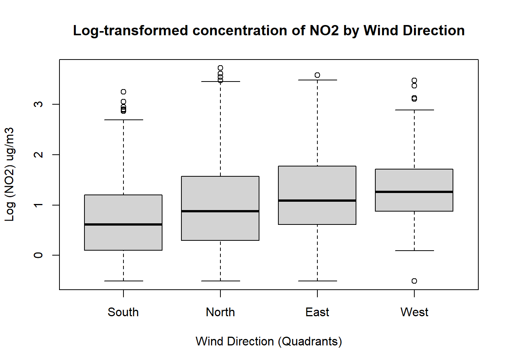
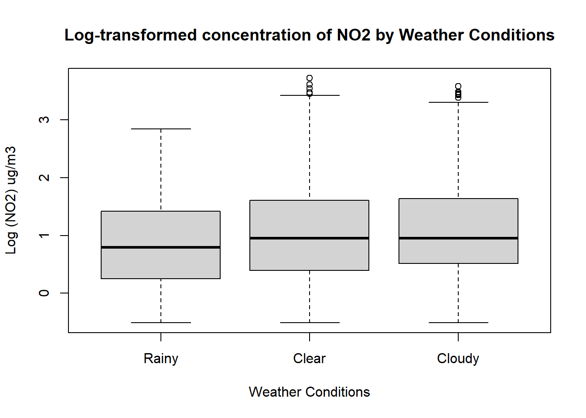

Code
pacman::p_load(tidyverse,gtsummary)pacman::p_load(tidyverse,gtsummary)df.no2 =
read_csv("../Data/no2_lme.csv") Rows: 1223 Columns: 15
── Column specification ────────────────────────────────────────────────────────
Delimiter: ","
chr (7): country, location_name, date.time, sunrise_dt, day.night, conditio...
dbl (6): temperature_celsius, wind_kph, pressure_mb, humidity, air_quality_...
dttm (1): sunset_dt
date (1): date
ℹ Use `spec()` to retrieve the full column specification for this data.
ℹ Specify the column types or set `show_col_types = FALSE` to quiet this message.df.no2$no2.mle <- round(df.no2$no2.mle, 2)
## creating log no2
df.no2$log.no2 <- log(df.no2$no2.mle)
## Creating wind_condensed variable
df.no2$wind_direction_condensed <- case_when(
df.no2$wind_direction %in% c("N", "NNE", "NNW", "NW") ~ "North",
df.no2$wind_direction %in% c("E", "ENE", "ESE", "NE") ~ "East",
df.no2$wind_direction %in% c("S", "SSE", "SSW", "SE") ~ "South",
df.no2$wind_direction %in% c("W", "WNW", "WSW", "SW") ~ "West",
TRUE ~ as.character(df.no2$wind_direction)
)
df.no2$wind_direction_condensed = factor(df.no2$wind_direction_condensed,
levels = c("South", "North", "East","West"))
## Creating condition categories
df.no2$condition_cat <- case_when(
df.no2$condition_text %in% c("Clear", "Sunny", "Partly cloudy", "Partly Cloudy") ~ "Clear",
df.no2$condition_text %in% c("Cloudy", "Overcast", "Mist", "Fog", "Freezing fog") ~ "Cloudy",
TRUE ~ "Rainy")
df.no2$condition_cat <- factor(df.no2$condition_cat,
levels = c("Rainy", "Clear", "Cloudy"))Please prepare a document containing the 4 pieces of information requested below, in the order listed. This does not have to be fancy or attractively formatted! There’s no page limit or expectation. Screenshots of R output are perfectly acceptable. All plots should have titles and axis labels that are easy to interpret.
For the two categorical variables (choose two for this milestone if you have more than two), provide box plots of the relationships with the exposure variable using the log-transformed values.
boxplot(df.no2$log.no2 ~ df.no2$wind_direction_condensed,
xlab = "Wind Direction (Quadrants)",
ylab = "Log (NO2) ug/m3",
main = "Log-transformed concentration of NO2 by Wind Direction")
boxplot(df.no2$log.no2 ~ df.no2$condition_cat,
xlab = "Weather Conditions",
ylab = "Log (NO2) ug/m3",
main = "Log-transformed concentration of NO2 by Weather Conditions"
)
For the two categorical variables, provide the results of ANOVA against the log-transformed exposure variable. If there is a significant association, provide the results of a Tukey HSD test.
Wind direction
ANOVA summary (slightly different than in Google sheets)
aov.wind = aov(df.no2$log.no2 ~ df.no2$wind_direction_condensed)
summary(aov.wind) Df Sum Sq Mean Sq F value Pr(>F)
df.no2$wind_direction_condensed 3 53.3 17.765 20.5 5.85e-13 ***
Residuals 1219 1056.6 0.867
---
Signif. codes: 0 '***' 0.001 '**' 0.01 '*' 0.05 '.' 0.1 ' ' 1Tukey results
TukeyHSD(aov.wind) Tukey multiple comparisons of means
95% family-wise confidence level
Fit: aov(formula = df.no2$log.no2 ~ df.no2$wind_direction_condensed)
$`df.no2$wind_direction_condensed`
diff lwr upr p adj
North-South 0.29952160 0.11797016 0.4810730 0.0001385
East-South 0.53073813 0.33095009 0.7305262 0.0000000
West-South 0.61734711 0.36531970 0.8693745 0.0000000
East-North 0.23121653 0.05921958 0.4032135 0.0031512
West-North 0.31782550 0.08720568 0.5484453 0.0022978
West-East 0.08660897 -0.15862528 0.3318432 0.8002971Weather conditions
ANOVA summary
aov.weather = aov(df.no2$log.no2 ~ df.no2$condition_cat)
summary(aov.weather) Df Sum Sq Mean Sq F value Pr(>F)
df.no2$condition_cat 2 10.6 5.325 5.91 0.00279 **
Residuals 1220 1099.2 0.901
---
Signif. codes: 0 '***' 0.001 '**' 0.01 '*' 0.05 '.' 0.1 ' ' 1Tukey summary (slightly different than in Google sheets)
TukeyHSD(aov.weather) Tukey multiple comparisons of means
95% family-wise confidence level
Fit: aov(formula = df.no2$log.no2 ~ df.no2$condition_cat)
$`df.no2$condition_cat`
diff lwr upr p adj
Clear-Rainy 0.2748364 0.07761365 0.4720591 0.0031698
Cloudy-Rainy 0.3151546 0.07084547 0.5594636 0.0071123
Cloudy-Clear 0.0403182 -0.13853762 0.2191740 0.8571376For the two categorical variables, provide the results of a linear regression model using the log-transformed values, including the estimated risk ratios for each variable category and their confidence intervals.
## changing the levels of weather conditions to match what is in the google sheet
df.no2$condition_cat2 <- factor(df.no2$condition_cat,
levels = c("Clear", "Cloudy","Rainy")
)
lm.weather <- lm(log.no2 ~ condition_cat2, data = df.no2)
summary(lm.weather)
Call:
lm(formula = log.no2 ~ condition_cat2, data = df.no2)
Residuals:
Min 1Q Median 3Q Max
-1.58136 -0.63818 -0.07856 0.57922 2.69403
Coefficients:
Estimate Std. Error t value Pr(>|t|)
(Intercept) 1.03022 0.03189 32.306 < 2e-16 ***
condition_cat2Cloudy 0.04032 0.07622 0.529 0.59692
condition_cat2Rainy -0.27484 0.08405 -3.270 0.00111 **
---
Signif. codes: 0 '***' 0.001 '**' 0.01 '*' 0.05 '.' 0.1 ' ' 1
Residual standard error: 0.9492 on 1220 degrees of freedom
Multiple R-squared: 0.009595, Adjusted R-squared: 0.007972
F-statistic: 5.91 on 2 and 1220 DF, p-value: 0.002791Results of weather conditions model with exponentiation coefficients
data.frame(
coef = exp(lm.weather$coefficients),
ci = exp(confint(lm.weather))
) %>%
mutate_if(is.double, ~round(.x, 2)) coef ci.2.5.. ci.97.5..
(Intercept) 2.80 2.63 2.98
condition_cat2Cloudy 1.04 0.90 1.21
condition_cat2Rainy 0.76 0.64 0.90Results of wind direction model with exponentiation coefficients
## changing the levels of wind directions to match what is in the Google sheet
df.no2$wind_direction_condensed2 <- factor(df.no2$wind_direction_condensed,
levels = c("East","North","South", "West")
)
lm.wind <- lm(log.no2 ~ wind_direction_condensed2, data = df.no2)
summary(lm.wind)
Call:
lm(formula = log.no2 ~ wind_direction_condensed2, data = df.no2)
Residuals:
Min 1Q Median 3Q Max
-1.80152 -0.58890 -0.05986 0.55045 2.75138
Coefficients:
Estimate Std. Error t value Pr(>|t|)
(Intercept) 1.20408 0.05254 22.918 < 2e-16 ***
wind_direction_condensed2North -0.23122 0.06686 -3.458 0.000562 ***
wind_direction_condensed2South -0.53074 0.07766 -6.834 1.3e-11 ***
wind_direction_condensed2West 0.08661 0.09533 0.909 0.363766
---
Signif. codes: 0 '***' 0.001 '**' 0.01 '*' 0.05 '.' 0.1 ' ' 1
Residual standard error: 0.931 on 1219 degrees of freedom
Multiple R-squared: 0.04802, Adjusted R-squared: 0.04568
F-statistic: 20.5 on 3 and 1219 DF, p-value: 5.848e-13data.frame(
coef = exp(lm.wind$coefficients),
ci = exp(confint(lm.wind))
) %>%
mutate_if(is.double, ~round(.x, 2)) coef ci.2.5.. ci.97.5..
(Intercept) 3.33 3.01 3.70
wind_direction_condensed2North 0.79 0.70 0.90
wind_direction_condensed2South 0.59 0.51 0.68
wind_direction_condensed2West 1.09 0.90 1.31Using information from 1-3, write a short interpretation (<100 words) of your findings for each variable. Again, this can be done in bullet form for the milestone. Do not simply repeat the results reported in 1-3; use your knowledge and experience to describe their meaning.